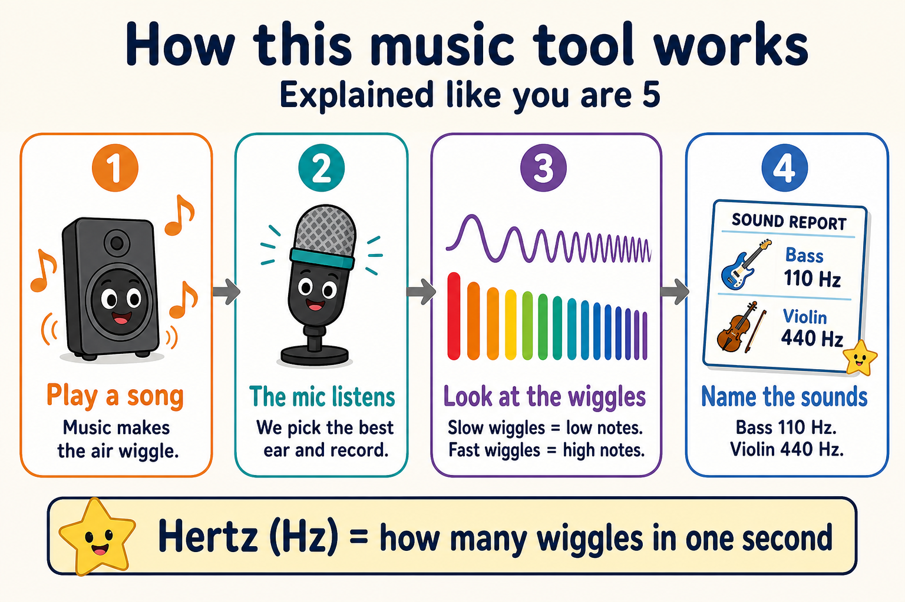

How this works (explained like you are 5)
Sound is air wiggling. Slow wiggles are low notes. Fast wiggles are high notes. We count the wiggles in one second. That count is Hertz (Hz).
A piano A is about 440 Hz. A low bass note can be near 110 Hz.
Open this on the device that is already making sound, including a phone on 5G. The page stays silent. It draws the live sound of this device (speaker, Now Playing through the speaker, room). Each instrument we can tell apart gets its own waveform track (up to 6). No melody? It still draws voices and noise. It never fakes a tune.

Useful
A song is a sandwich, not a blob:
- Boom on the bottom = left hand / bass
- Tune in the middle = the part you can hum
- Sparkle on top = extra shine
The tool writes that recipe in Hertz. Then you can practice one layer at a time.
Why doing it live is hard
Naming notes while the song is still happening is like reading a page someone is still flipping:
- Many notes stack (chords)
- Piano keys ring extra high copies called overtones
- The computer needs a little bite of sound before it can guess
So the grown-up tool records, then looks. Tiny delay, better answer. The live page shows the messy moving picture so the delay makes sense.
Piano superpower
If the loudest wiggle is 440 Hz, that is the A key. Find it. Play it. Match it. That is ear training: hearing a map, not a blur.
Kid words vs Hertz
| Kid words | Grown-up words | Typical Hz |
|---|---|---|
| Boom / rumble | Bass foundation | 40–250 |
| Warm body | Low-mid | 250–500 |
| Tune you can hum | Mid melody | 500–2000 |
| Sparkle / air | High color | 2000–5000 |